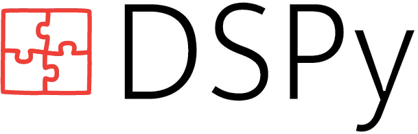

%%{init: {
'theme': 'base',
'themeVariables': {
'primaryColor': '#ffffff',
'primaryTextColor': '#2d3748',
'primaryBorderColor': '#90cdf4',
'lineColor': '#64748b',
'secondaryColor': '#ffffff',
'tertiaryColor': '#ffffff',
'fontSize': '22px',
'labelFontSize': '18px',
'edgeLabelFontSize': '18px'
}
}}%%
graph TB
%% Define styles
classDef default fill:#ffffff,stroke:#90cdf4,stroke-width:2px
classDef highlight fill:#fdf2f8,stroke:#ed64a6,stroke-width:3px
classDef api fill:#ffffff,stroke:#4fd1c5,stroke-width:2px
subgraph Data ["1️⃣ Data"]
D1[SemEval Dataset] --> |"Transform"| D2[DSPy Examples]
end
subgraph Definition ["2️⃣ Model Definition"]
M2[Pydantic Models] --> |"Define Structure"| M1[DSPy Signature]
M1 --> |"Initialize"| M3[Predictor]
M4[Language Models] --> |"Power"| M3
A1[OpenAI API] --> |"Provide"| M4
A2[Fireworks.ai API] --> |"Provide"| M4
end
subgraph Optimization ["3️⃣ Optimization"]
O1[Evaluation Function] --> |"Guide"| O2[MIPROv2 Optimizer]
M3 --> |"Optimize"| O2
D2 --> |"Train"| O2
O2 --> |"Output"| O3[Optimized Predictor]
end
subgraph Evaluation ["4️⃣ Evaluation"]
O3 --> |"Test"| E1[Test Set Evaluation]
O1 --> |"Measure"| E1
E1 --> |"Log"| E2[Weights & Biases]
end
%% Apply styles
class O2 highlight
class A1,A2,E2 api
%% Links between subgraphs
linkStyle default stroke:#64748b,stroke-width:2px
Last year, my colleague Paavo Huoviala and I explored prompting and fine-tuning large language models for aspect-based sentiment analysis (ABSA) (Simmering and Huoviala 2023). Like many researchers at the time, we spent considerable effort manually crafting prompts and selecting few-shot examples. But what if we could automate this process? Enter DSPy - a Python library that automatically optimizes LLM prompts. In this article, I’ll revisit our ABSA experiments using DSPy’s automated approach instead of manual prompt engineering.
| Resource | Link |
|---|---|
| 💻 Code | GitHub |
| 📊 Experiments | Weights & Biases project |
| 📝 Dataset | Hugging Face Hub |
DSPy version 2.5.32
DSPy is in rapid development. I’ve encountered outdated tutorials, dead links in the documentation and deprecation warnings. The code of this article may not work with future versions.
DSPy: Programming — not prompting — LLMs

DSPy is a Python library developed by Stanford NLP. Rather than manually crafting prompts and seeing them break whenever something changes elsewhere in the pipeline, DSPy automates the process of finding the optimal prompts. The documentation has an overview of the main building blocks of the library. In this article, I’ll introduce the elements needed to optimize a structured prediction task, using ABSA as an example.
Experiment setup
The steps will be explained in the following sections.
Dataset for Aspect-based Sentiment Analysis
The goal of ABSA is to analyze a review and extract the discussed aspects of a product or service and the sentiment towards each aspect. For example, the review “The pizza was great, but the service was terrible” contains two aspects: “pizza” (positive) and “service” (negative). There are more advanced variants of ABSA, but for this article I’ll focus on the basic task. I will also let a single model handle the extraction and the classification.
SemEval 2014 Task 4
I’m using the SemEval 2014 Task 4 dataset by Pontiki et al. (2014). The dataset is available on Hugging Face. This is a cleaned version of the original XML files consisting of train and test splits. The small number of examples with the “conflict” label are excluded, as is common in the literature.
import polars as pl
url = "hf://datasets/psimm/absa-semeval2014-alpaca"
train = pl.read_parquet(url + "/data/train-00000-of-00001.parquet")
test = pl.read_parquet(url + "/data/test-00000-of-00001.parquet")Code
from great_tables import GT
overview = (
train.vstack(test)
.group_by(["split", "domain"])
.agg(examples=pl.len())
.sort("split", "domain", descending=True)
)
GT(overview).tab_header("SemEval 2014 Task 4 Dataset").cols_label(
split="Split",
domain="Domain",
examples="Examples",
).cols_align(align="right", columns=["examples"])| SemEval 2014 Task 4 Dataset | ||
|---|---|---|
| Split | Domain | Examples |
| train | restaurants | 2957 |
| train | laptops | 3002 |
| test | restaurants | 786 |
| test | laptops | 786 |
The dataset contains a similar number of restaurant and laptop reviews.
The goal is to choose the optimal prompt and few-shot examples to maximize the F1 score of the aspect extraction and classification. To achieve this, DSPy needs to be able to evaluate the metrics and a training set to learn from.
Model Definition
Pydantic models for ABSA
We create classes to represent the input and output of the task using the data validation library Pydantic. This helps with validating the data and provides a structured output format for predictor. The Field class is used to describe the expected data type. Their descriptions match the ones used in (Simmering and Huoviala 2023). This is a form of prompting, but DSPy also supports automatically setting the structure’s descriptions using the optimize_signature optimizer. In this experiment I’ll stick with the original descriptions and only vary the normal prompt and few-shot examples.
from typing import Literal
from pydantic import BaseModel, Field
class Input(BaseModel):
text: str = Field()
class Aspect(BaseModel):
term: str = Field(
description="An aspect term, which is a verbatim text snippet. Single or multiword terms naming particular aspects of the reviewed product or service."
)
polarity: Literal["positive", "neutral", "negative"] = Field(
description="The polarity expressed towards the aspect term. Valid polarities are ‘positive’, ‘neutral’, ‘negative'."
)
def __hash__(self):
"""
Make the aspect hashable to enable set operations in evaluation.
Hash is case-insensitive.
"""
return hash((self.term.lower(), self.polarity.lower()))
def __eq__(self, other):
"""
Define equality for case-insensitive comparison.
"""
if not isinstance(other, Aspect):
return False
return (
self.term.lower() == other.term.lower()
and self.polarity.lower() == other.polarity.lower()
)
class Aspects(BaseModel):
aspects: list[Aspect] = Field(
description="An array of aspects and their polarities. If no aspects are mentioned in the text, use an empty array."
)The __hash__ and __eq__ methods will be helpful for evaluation, because they allow for use of set operations to compare gold and predicted aspects.
Transform dataset to DSPy examples
Each row in the dataset needs to be turned into an instance of the dspy.Example class. The with_inputs method is used to tell DSPy which column contains the input. Other columns are used as expected model outputs.
import json
import dspy
def to_example(row):
return dspy.Example(
text=row["input"],
aspects=Aspects(aspects=json.loads(row["output"])["aspects"]),
).with_inputs("text")
trainset = [to_example(row) for row in train.to_dicts()]
testset = [to_example(row) for row in test.to_dicts()]Let’s look at the first example.
trainset[0]Example({'text': 'I charge it at night and skip taking the cord with me because of the good battery life.', 'aspects': Aspects(aspects=[Aspect(term='cord', polarity='neutral'), Aspect(term='battery life', polarity='positive')])}) (input_keys={'text'})Creating a DSPy typed predictor
In DSPy, a module is a language model and a way of prompting. They can also consist of multiple requests and also include external tools such as a vector database for retrieval augmented generation. In this example, we have a single request using few-shot examples and chain of thought.
In order to be able to parse the output as a dictionary, the LLM must output valid JSON. Therefore I’ll use a Typed Predictor in DSPy, which is similar to structured outputs via instructor or a similar library.
class AbsaSignature(dspy.Signature):
text: Input = dspy.InputField()
aspects: Aspects = dspy.OutputField()
predictor = dspy.ChainOfThought(AbsaSignature)We also need to choose a language model. DSPy works with OpenAI, Anthropic, Ollama, vllm and other OpenAI-compatible platforms and libraries. This is powered by litellm under the hood.
For this article, I’ll use OpenAI’s gpt-4o-mini as well as the 70B version of Meta’s Llama 3.1 hosted on fireworks.ai. Fireworks.ai generously supplied me with credits as part of the Mastering LLMs For Developers & Data Scientists course.
# FIREWORKS_AI_API_KEY environment variable must be set.
lm = dspy.LM(
api_base="https://api.fireworks.ai/inference/v1/",
model="fireworks_ai/accounts/fireworks/models/llama-v3p1-70b-instruct",
temperature=0.0, # best for structured outputs
cache=True,
max_tokens=250,
)
dspy.configure(lm=lm)Optimization
Let’s run a single example to check that everything is working.
predictor(text="The pizza was great, but the service was terrible")Prediction(
reasoning='The text expresses a mixed sentiment towards the pizza place, with a positive sentiment towards the pizza and a negative sentiment towards the service.',
aspects=Aspects(aspects=[Aspect(term='pizza', polarity='positive'), Aspect(term='service', polarity='negative')])
)That’s a good start. I’m a fan of Hamel Husain’s advice to always demand: “Show me the prompt”, so let’s check what DSPy actually sent to OpenAI:
lm.inspect_history(n=1)
[2024-11-24T17:27:26.491140]
System message:
Your input fields are:
1. `text` (Input)
Your output fields are:
1. `reasoning` (str)
2. `aspects` (Aspects)
All interactions will be structured in the following way, with the appropriate values filled in.
[[ ## text ## ]]
{text}
[[ ## reasoning ## ]]
{reasoning}
[[ ## aspects ## ]]
{aspects} # note: the value you produce must be pareseable according to the following JSON schema: {"type": "object", "$defs": {"Aspect": {"type": "object", "properties": {"polarity": {"type": "string", "description": "The polarity expressed towards the aspect term. Valid polarities are ‘positive’, ‘neutral’, ‘negative'.", "enum": ["positive", "neutral", "negative"], "title": "Polarity"}, "term": {"type": "string", "description": "An aspect term, which is a verbatim text snippet. Single or multiword terms naming particular aspects of the reviewed product or service.", "title": "Term"}}, "required": ["term", "polarity"], "title": "Aspect"}}, "properties": {"aspects": {"type": "array", "description": "An array of aspects and their polarities. If no aspects are mentioned in the text, use an empty array.", "items": {"$ref": "#/$defs/Aspect"}, "title": "Aspects"}}, "required": ["aspects"], "title": "Aspects"}
[[ ## completed ## ]]
In adhering to this structure, your objective is:
Given the fields `text`, produce the fields `aspects`.
User message:
[[ ## text ## ]]
The pizza was great, but the service was terrible
Respond with the corresponding output fields, starting with the field `[[ ## reasoning ## ]]`, then `[[ ## aspects ## ]]` (must be formatted as a valid Python Aspects), and then ending with the marker for `[[ ## completed ## ]]`.
Response:
[[ ## reasoning ## ]]
The text expresses a mixed sentiment towards the pizza place, with a positive sentiment towards the pizza and a negative sentiment towards the service.
[[ ## aspects ## ]]
{"aspects": [{"term": "pizza", "polarity": "positive"}, {"term": "service", "polarity": "negative"}]}
[[ ## completed ## ]]
Verbose but it works. It doesn’t use function calling or a different way to get structured outputs, so there is some chance of getting an invalid JSON.
Specify the evaluation function
An evaluation function takes an example and a prediction and returns an F1 score. A true positive is a predicted aspect that is also in the gold answer, a false positive is a predicted aspect that is not in the gold answer, and a false negative is a gold answer aspect that is not predicted. Here are the precision, recall, and F1 score functions.
def precision(tp: int, fp: int) -> float:
# Handle division by zero
return 0.0 if tp + fp == 0 else tp / (tp + fp)
def recall(tp: int, fn: int) -> float:
return 0.0 if tp + fn == 0 else tp / (tp + fn)
def f1_score(tp: int, fp: int, fn: int) -> float:
prec = precision(tp, fp)
rec = recall(tp, fn)
return 0.0 if prec + rec == 0 else 2 * (prec * rec) / (prec + rec)Next is the evaluation function which compares the gold and predicted aspects. To count as a true positive, both the term and the polarity have to be correct. As it is conventional on this benchmark, the case where both the gold answers and the prediction are empty is treated as a correct prediction of no aspects.
def evaluate_absa(example: dspy.Example, prediction: Aspects, trace=None) -> float:
gold_aspects = set(example.aspects.aspects)
pred_aspects = set(prediction.aspects.aspects)
tp = len(gold_aspects & pred_aspects)
fp = len(pred_aspects - gold_aspects)
fn = len(gold_aspects - pred_aspects)
if len(gold_aspects) == 0 and len(pred_aspects) == 0:
tp += 1 # correct prediction of no aspects
return f1_score(tp, fp, fn)Let’s try the evaluation function with a single example. We expect the F1 score to be 1.0, because the prediction matches the gold answer exactly.
example = dspy.Example(
text="The pizza was great, but the service was terrible",
aspects=Aspects(
aspects=[
Aspect(term="pizza", polarity="positive"),
Aspect(term="service", polarity="negative"),
]
),
).with_inputs("text")
prediction = predictor(text=example.text)
evaluate_absa(example, prediction)1.0Optimizers
DSPy has a variety of optimizers, loops that change the prompt and/or few-shot examples and evaluate the performance. They’re analogous to optimizers like SGD and Adam in PyTorch. The choice of optimizer depends on the task, the amount of labeled data and the computational resources available. As we have a large labeled dataset, it’s not necessary to have the model bootstrap artificial examples. Our 2023 paper found that fine-tuning yields the best results, but the goal of this article is to showcase DSPy’s prompt optimization.
The most powerful optimizer available for a prompting approach for this task is MIPROv2 (Multiprompt Instruction PRoposal Optimizer Version 2) by Opsahl-Ong et al. (2024). MIPROv2 uses Bayesian optimization to find an optimal combination of few-shot examples and prompt instructions.
optimizer_settings = dict(
metric=evaluate_absa,
num_threads=12, # make parallel requests to Fireworks.ai
max_errors=1000, # keep going even when invalid JSON is returned
)
optimizer = dspy.teleprompt.MIPROv2(**optimizer_settings)The final step is to call the compile method, which starts the optimization process. After about 5 minutes, the best prompt and few-shot examples are saved to a JSON file.
# Define settings for the comilation step of the optimizer.
compile_settings = dict(
minibatch_size=50, # evaluate changes on a subset of the validation set
minibatch_full_eval_steps=10, # evaluate on the full validation set after every 10 steps
max_labeled_demos=4, # the number of few-shot examples to use
max_bootstrapped_demos=1, # not required because we have labeled examples, but setting it to 0 causes an error during sampling
num_trials=3, # how many combinations of few-shot examples and prompt instructions to try
seed=42, # for reproducibility
requires_permission_to_run=False, # skip confirmation dialog
)We save the optimized predictor to a JSON file. It’s a small config file listing the chosen few-shot examples and the optimized prompt.
optimized_predictor = optimizer.compile(
student=predictor, trainset=trainset, **compile_settings
)
optimized_predictor.save("configs/absa_model.json")Let’s check if we can load it again:
optimized_predictor = dspy.ChainOfThought(signature=AbsaSignature)
optimized_predictor.load(path="configs/absa_model.json")Again: “Show me the prompt”.
print(optimized_predictor.extended_signature.instructions)You are a product reviewer tasked with analyzing customer feedback for laptops and netbooks. Given the fields `text`, which contains a customer review, produce the fields `aspects`, which should include the specific features or aspects of the laptop or netbook mentioned in the review, along with their corresponding sentiment or polarity.and show me the chosen few-shot examples:
for demo in optimized_predictor.demos[:3]: # first 3 examples
print(demo["text"])
print(demo["aspects"])-Called headquarters again, they report that TFT panel is broken, should be fixed by the end of the week (week 3).
{"aspects":[{"term":"TFT panel","polarity":"negative"}]}
But we had paid for bluetooth, and there was none.
{"aspects":[{"term":"bluetooth","polarity":"negative"}]}
The powerpoint opened seamlessly in the apple and the mac hooked up to the projector so easily it was almost scary.
{"aspects":[{"term":"powerpoint","polarity":"positive"}]}Evaluation
So far, we’ve only evaluated on the validation part of the training set (this was automatically done by DSPy). Let’s evaluate the optimized predictor on the test set.
evaluator = dspy.Evaluate(
devset=testset,
metric=evaluate_absa,
display_progress=True,
num_threads=12,
)score = evaluator(optimized_predictor)The first run yields an F1 score of 47.6. That’s rather poor, but the compiler settings only allow for 4 labeled examples and 1 bootstrapped example and only 3 trials.
Hyperparameter optimization
What would happen if we changed the hyperparameters? Let’s do a grid search over the number of few-shot examples and the number of trials, as well as try different models.
import itertools
max_labeled_demos = [5, 10, 20, 40]
num_trials = [15, 30, 60]
chain_of_thought = [True, False]
default_lm_settings = dict(
temperature=0.0, # best for structured outputs, no creativity needed
cache=True,
max_tokens=250,
)
lm_settings = [
{
"model": "fireworks_ai/accounts/fireworks/models/llama-v3p1-70b-instruct",
"api_base": "https://api.fireworks.ai/inference/v1/",
**default_lm_settings,
},
{
"model": "gpt-4o-mini-2024-07-18",
**default_lm_settings,
},
]
grid = list(
itertools.product(max_labeled_demos, num_trials, chain_of_thought, lm_settings)
)This results in a grid with 48 combinations. Next, we iterate over the grid, perform the optimization run and save the results to Weights & Biases.
import os
from copy import deepcopy
import wandb
from tqdm import tqdm
assert os.getenv("FIREWORKS_AI_API_KEY") is not None, "FIREWORKS_AI_API_KEY is not set."
assert os.getenv("OPENAI_API_KEY") is not None, "OPENAI_API_KEY is not set."
for max_labeled_demos, num_trials, chain_of_thought, lm_settings in tqdm(grid):
# Generate a filename for the run
modelname = lm_settings["model"].replace("/", "_")
cot_name = "cot" if chain_of_thought else "predict"
run_name = f"{modelname}_{max_labeled_demos}_{num_trials}_{cot_name}"
filepath = "configs/" + run_name + ".json"
if os.path.exists(filepath):
print(f"Skipping {run_name} because it already exists.")
continue
else:
print(f"Running {run_name}.")
# Create fresh copies of settings for this run
run_compile_settings = deepcopy(compile_settings)
run_optimizer_settings = deepcopy(optimizer_settings)
# Update settings
run_compile_settings["max_labeled_demos"] = max_labeled_demos
run_compile_settings["num_trials"] = num_trials
if chain_of_thought:
predictor = dspy.ChainOfThought(AbsaSignature)
else:
predictor = dspy.Predict(AbsaSignature)
# Do an optimization run and evaluate the resulting model
try:
dspy.configure(lm=dspy.LM(**lm_settings))
optimizer = dspy.teleprompt.MIPROv2(**run_optimizer_settings)
optimized_predictor = optimizer.compile(
student=predictor, trainset=trainset, **run_compile_settings
)
score = evaluator(optimized_predictor)
except Exception as e:
print(
f"Failed run with settings: max_labeled_demos={max_labeled_demos}, "
f"num_trials={num_trials}, model={lm_settings['model']}"
)
print(f"Error: {str(e)}")
continue
optimized_predictor.save(filepath)
# Log experiment to W&B
config = {
"output_schema": Aspects.model_json_schema(),
"compile_settings": run_compile_settings,
"optimizer_settings": run_optimizer_settings,
"chain_of_thought": chain_of_thought,
"lm_settings": lm_settings,
}
with wandb.init(project="absa-dspy", config=config, name=run_name) as run:
wandb.log({"f1": score})
wandb.save(filepath)Comparison with manual prompts
In the 2023 paper, co-author and I manually crafted prompts and chose few-shot examples that, in our opinion, illustrated the task well. Inference was done using the OpenAI API and using function calling to ensure structured outputs. To make the comparison fair, we’ll now use the same prompts within DSPy.
The manual prompts and few-shot examples are available on Github.
The models gpt-4-0613 and gpt-3.5-turbo-0613 that were used in the 2023 paper are no longer available on the OpenAI API. Therefore, we use the closest substitutes here.
models = [
"gpt-4o-2024-11-20", # similar to gpt-4-0613
"gpt-3.5-turbo-0125", # similar to gpt-3.5-turbo-0613
"gpt-4o-mini-2024-07-18", # reference
]
manual_predictor = dspy.Predict(AbsaSignature)
manual_predictor.load(path="configs/manual_prompt.json")
for model in models:
lm = dspy.LM(
model=model,
temperature=0,
cache=True,
max_tokens=250,
)
dspy.configure(lm=lm)
score = evaluator(manual_predictor)
runname = f"{model}_manual_prompt"
config = {
"output_schema": Aspects.model_json_schema(),
"compile_settings": {
"max_labeled_demos": len(manual_predictor.demos),
"max_bootstrapped_demos": 0,
},
"lm_settings": {
"model": model,
},
}
with wandb.init(project="absa-dspy", name=runname, config=config) as run:
wandb.log({"f1": score})
wandb.save("configs/manual_prompt.json")Results and discussion
We load the results from the Weights & Biases project and show the most relevant columns for a comparison of the runs.
import wandb
api = wandb.Api()
# Get all runs from the project
runs = api.runs("psimm/absa-dspy")
# Convert to DataFrame
results = []
for run in runs:
results.append(
{
"run_name": run.name,
"model": run.config["lm_settings"]["model"],
"max_demos": run.config["compile_settings"]["max_labeled_demos"],
"max_bootstrapped_demos": run.config["compile_settings"][
"max_bootstrapped_demos"
],
"num_trials": run.config.get("compile_settings", {}).get(
"num_trials", None
),
"chain_of_thought": run.config["chain_of_thought"],
"f1": run.summary["f1"],
}
)
results_df = pl.DataFrame(results)Code
table_df = (
results_df.with_columns(
method=pl.when(pl.col("run_name").str.contains("manual"))
.then(pl.lit("Manual (2023)"))
.otherwise(pl.lit("DSPy")),
model=pl.col("model").str.replace(
"fireworks_ai/accounts/fireworks/models/", ""
),
demos=pl.when(pl.col("max_bootstrapped_demos") == 0)
.then(pl.col("max_demos").cast(pl.Utf8))
.otherwise(
pl.col("max_demos").cast(pl.Utf8)
+ " + "
+ pl.col("max_bootstrapped_demos").cast(pl.Utf8)
),
chain_of_thought=pl.when(pl.col("chain_of_thought"))
.then(pl.lit("✅"))
.otherwise(pl.lit("❌")),
)
.sort("f1", descending=True)
.select(
"model",
"method",
"num_trials",
"demos",
"chain_of_thought",
"f1",
)
)
GT(table_df).tab_header("SemEval 2014 Task 4 1+2 Few-Shot Predictors").cols_label(
model="Model",
method="Method",
demos="Labeled + Bootstrapped Demos",
num_trials="Trials",
chain_of_thought="Chain of Thought",
f1="F1 Score",
).cols_align(align="right", columns=["demos", "num_trials", "f1"]).fmt_number(
columns=["f1"], decimals=2
).tab_source_note(
"Note: Limited Llama 3.1 70B non-CoT runs due to API constraints. Manual prompt runs use 10 examples vs. 6 in original paper."
)| SemEval 2014 Task 4 1+2 Few-Shot Predictors | |||||
|---|---|---|---|---|---|
| Model | Method | Trials | Labeled + Bootstrapped Demos | Chain of Thought | F1 Score |
| gpt-4o-2024-11-20 | Manual (2023) | None | 10 | ❌ | 71.28 |
| gpt-4o-mini-2024-07-18 | DSPy | 15 | 40 + 1 | ❌ | 62.83 |
| llama-v3p1-70b-instruct | DSPy | 60 | 5 + 1 | ❌ | 61.49 |
| gpt-4o-mini-2024-07-18 | DSPy | 60 | 10 + 1 | ❌ | 61.34 |
| gpt-4o-mini-2024-07-18 | DSPy | 15 | 20 + 1 | ❌ | 60.87 |
| gpt-4o-mini-2024-07-18 | DSPy | 30 | 20 + 1 | ❌ | 60.87 |
| gpt-4o-mini-2024-07-18 | DSPy | 60 | 20 + 1 | ❌ | 60.87 |
| llama-v3p1-70b-instruct | DSPy | 15 | 40 + 1 | ❌ | 60.32 |
| llama-v3p1-70b-instruct | DSPy | 60 | 5 + 1 | ✅ | 60.27 |
| gpt-4o-mini-2024-07-18 | DSPy | 60 | 40 + 1 | ✅ | 59.80 |
| gpt-4o-mini-2024-07-18 | DSPy | 15 | 20 + 1 | ✅ | 59.68 |
| gpt-4o-mini-2024-07-18 | DSPy | 30 | 20 + 1 | ✅ | 59.68 |
| gpt-4o-mini-2024-07-18 | DSPy | 60 | 20 + 1 | ✅ | 59.68 |
| gpt-4o-mini-2024-07-18 | DSPy | 30 | 40 + 1 | ✅ | 59.60 |
| gpt-4o-mini-2024-07-18 | DSPy | 15 | 40 + 1 | ✅ | 59.32 |
| gpt-4o-mini-2024-07-18 | DSPy | 60 | 5 + 1 | ❌ | 58.83 |
| llama-v3p1-70b-instruct | DSPy | 30 | 10 + 1 | ❌ | 58.79 |
| llama-v3p1-70b-instruct | DSPy | 60 | 10 + 1 | ❌ | 58.79 |
| llama-v3p1-70b-instruct | DSPy | 30 | 5 + 1 | ❌ | 58.36 |
| llama-v3p1-70b-instruct | DSPy | 60 | 20 + 1 | ❌ | 57.98 |
| llama-v3p1-70b-instruct | DSPy | 30 | 20 + 1 | ❌ | 57.84 |
| gpt-3.5-turbo-0125 | Manual (2023) | None | 10 | ❌ | 57.45 |
| llama-v3p1-70b-instruct | DSPy | 60 | 40 + 1 | ✅ | 56.46 |
| gpt-4o-mini-2024-07-18 | Manual (2023) | None | 10 | ❌ | 55.67 |
| llama-v3p1-70b-instruct | DSPy | 15 | 20 + 1 | ❌ | 54.90 |
| llama-v3p1-70b-instruct | DSPy | 60 | 10 + 1 | ✅ | 54.33 |
| llama-v3p1-70b-instruct | DSPy | 15 | 40 + 1 | ✅ | 54.09 |
| llama-v3p1-70b-instruct | DSPy | 30 | 40 + 1 | ✅ | 54.09 |
| gpt-4o-mini-2024-07-18 | DSPy | 15 | 5 + 1 | ❌ | 53.70 |
| gpt-4o-mini-2024-07-18 | DSPy | 30 | 5 + 1 | ❌ | 53.70 |
| llama-v3p1-70b-instruct | DSPy | 30 | 5 + 1 | ✅ | 53.05 |
| gpt-4o-mini-2024-07-18 | DSPy | 60 | 10 + 1 | ✅ | 52.64 |
| gpt-4o-mini-2024-07-18 | DSPy | 15 | 10 + 1 | ❌ | 51.19 |
| gpt-4o-mini-2024-07-18 | DSPy | 30 | 10 + 1 | ❌ | 51.19 |
| gpt-4o-mini-2024-07-18 | DSPy | 15 | 5 + 1 | ✅ | 51.16 |
| gpt-4o-mini-2024-07-18 | DSPy | 30 | 5 + 1 | ✅ | 51.16 |
| gpt-4o-mini-2024-07-18 | DSPy | 60 | 5 + 1 | ✅ | 51.16 |
| llama-v3p1-70b-instruct | DSPy | 30 | 20 + 1 | ✅ | 50.90 |
| llama-v3p1-70b-instruct | DSPy | 60 | 20 + 1 | ✅ | 50.90 |
| gpt-4o-mini-2024-07-18 | DSPy | 30 | 10 + 1 | ✅ | 49.97 |
| gpt-4o-mini-2024-07-18 | DSPy | 15 | 10 + 1 | ✅ | 49.74 |
| llama-v3p1-70b-instruct | DSPy | 15 | 20 + 1 | ✅ | 49.47 |
| llama-v3p1-70b-instruct | DSPy | 15 | 10 + 1 | ❌ | 48.63 |
| llama-v3p1-70b-instruct | DSPy | 15 | 5 + 1 | ✅ | 47.73 |
| llama-v3p1-70b-instruct | DSPy | 30 | 10 + 1 | ✅ | 47.30 |
| llama-v3p1-70b-instruct | DSPy | 15 | 5 + 1 | ❌ | 46.46 |
| llama-v3p1-70b-instruct | DSPy | 15 | 10 + 1 | ✅ | 46.31 |
| Note: Limited Llama 3.1 70B non-CoT runs due to API constraints. Manual prompt runs use 10 examples vs. 6 in original paper. | |||||
Comparison to the 2023 manual prompts
The DSPy runs are competitive with the manually crafted prompts from the 2023 paper. In contrast to the manual prompt, DSPy instructions are relatively short and emphasize the use of few-shot examples to illustrate the task.
Impact of hyperparameters
To understand which factors significantly influence the F1 score, we’ll run a simple linear regression analysis. The manual runs are excluded. To analyze the impact of the model choice, we’ll create a boolean variable for gpt-4o-mini and treat llama-v3p1-70b-instruct as the baseline.
Code
import statsmodels.api as sm
import pandas as pd
# Prepare data for regression
reg_df = results_df.filter(
~pl.col("run_name").str.contains("manual"),
pl.col("model").str.contains("gpt-4o-mini") | pl.col("model").str.contains("llama"),
).with_columns( # exclude manual prompts
pl.col("model").str.contains("gpt-4o-mini").alias("is_gpt4_mini"),
)
# Convert to pandas and ensure numeric types
X = reg_df.select(
["max_demos", "chain_of_thought", "num_trials", "is_gpt4_mini"]
).to_pandas()
# Convert boolean columns to int
bool_columns = ["chain_of_thought", "is_gpt4_mini"]
for col in bool_columns:
X[col] = X[col].astype(int)
y = reg_df.select("f1").to_pandas()
# Add constant for intercept
X = sm.add_constant(X)
# Fit regression
model = sm.OLS(y, X).fit()
n = len(reg_df)
r2 = model.rsquared
# Print results using GT
df = pd.DataFrame(
model.summary().tables[1],
columns=[
"Parameter",
"Coefficient",
"Std Error",
"t",
"p>|t|",
"[0.025",
"0.975]",
],
)
df = df.iloc[1:] # remove row with repeated column names
GT(df).tab_header(
title="Hyperparameter Analysis", subtitle="Dependent variable: F1 score"
).cols_align(align="right").tab_source_note(f"n={n} runs, R²={r2:.2f}")| Hyperparameter Analysis | ||||||
|---|---|---|---|---|---|---|
| Dependent variable: F1 score | ||||||
| Parameter | Coefficient | Std Error | t | p>|t| | [0.025 | 0.975] |
| const | 49.3654 | 1.457 | 33.885 | 0.000 | 46.419 | 52.312 |
| max_demos | 0.2021 | 0.042 | 4.794 | 0.000 | 0.117 | 0.287 |
| chain_of_thought | -4.3317 | 1.038 | -4.172 | 0.000 | -6.432 | -2.232 |
| num_trials | 0.1062 | 0.027 | 3.892 | 0.000 | 0.051 | 0.161 |
| is_gpt4_mini | 2.2964 | 1.016 | 2.260 | 0.029 | 0.241 | 4.351 |
| n=44 runs, R²=0.56 | ||||||
Few-shot examples
More examples are generally better, as indicated by the positive coefficient in the regression. However, the top runs didn’t use more than 20 examples, indicating that there are diminishing returns.
Chain of thought (CoT)
Runs where the model was instructed to perform an intermediate reasoning step yielded worse results than those without. This is an unusual result - typically CoT helps LLMs achieve better results, for example the main advantage of OpenAI’s o1-preview over gpt-4o is the advanced CoT that is built into it. However, on this structured task, CoT reasoning seems to be detrimental and a waste of output tokens.
Model choice
gpt-4o-mini-2024-07-18seems to have an edge overllama-v3p1-70b-instruct, but the confidence interval is wide.gpt-4o-2024-11-20performs better than the other models that were tested. I expect that performance of similar sized models such asLlama 3.1 405Bwill be similar. Due to cost considerations, I’ve skipped the optimization of a large model with DSPy.gpt-3.5-turbo-0125performed better thangpt-4o-mini-2024-07-18, but worse than the deprecatedgpt-3.5-turbo-0613performed during the experiments for the 2023 paper (57.45 vs. 65.65 F1 Score).
Number of trials
Using more trials is associated with higher F1 scores. However, the table also shows setups with identical results at 15, 30 and 60 trials. Going beyond 60 trials isn’t likely to be helpful.
Review of DSPy
Here are my conclusions based on this experiment.
Pros ✅
- Creates prompts that are as good as or better than manually crafted prompts.
- No need to manually craft prompts, leading to faster iteration speed.
- Able to deal with multi-step workflows.
- Naturally encourages a structured approach focused on evaluation.
- Supports many LLMs, via APIs and locally.
- Lightweight JSON export of the optimized prompts.
- Supports custom evaluation metrics.
- Built-in threading and caching, which saved me time and money.
- Actively developed and has a large community.
- Lots of tutorial notebooks.
Cons ❌
- Generated prompts seem too short to explain the nuances of the task. The examples have to implicitly explain the annotation rules.
- Loss of control over the exact prompt. But arguably, if you want to control the prompt DSPy is not the approach to go for anyway.
- Structured output is not guaranteed, because it’s based on prompting only. Integration with function calling, JSON mode or constrained generation APIs and libraries would improve the reliability of the format.
- Steep learning curve with many concepts to understand.
- I encountered some bugs and deprecated functions and tutorials.
DSPy is a great alternative to manual prompting, especially for tasks that have clear evaluation metrics and are demonstrable using few-shot examples.
Another feature that I haven’t explored here is the fine-tuning optimizer of DSPy that actually modifies the model weights. It’s promising for this task, as a fine-tuned gpt-3.5-turbo-0613 is still the record holder at an F1 score of 83.76.
References
Opsahl-Ong, Krista, Michael J Ryan, Josh Purtell, David Broman, Christopher Potts, Matei Zaharia, and Omar Khattab. 2024. “Optimizing Instructions and Demonstrations for Multi-Stage Language Model Programs.” https://arxiv.org/abs/2406.11695.
Pontiki, Maria, Dimitris Galanis, John Pavlopoulos, Harris Papageorgiou, Ion Androutsopoulos, and Suresh Manandhar. 2014. “SemEval-2014 Task 4: Aspect Based Sentiment Analysis.” In Proceedings of the 8th International Workshop on Semantic Evaluation (SemEval 2014), 27–35. Dublin, Ireland: Association for Computational Linguistics. https://doi.org/10.3115/v1/S14-2004.
Simmering, Paul F., and Paavo Huoviala. 2023. “Large Language Models for Aspect-Based Sentiment Analysis.” https://arxiv.org/abs/2310.18025.